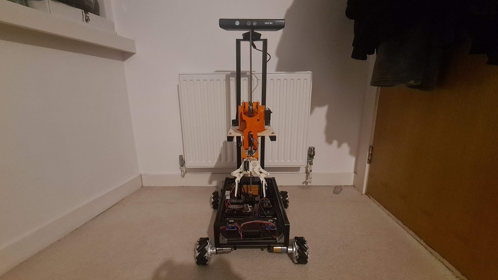
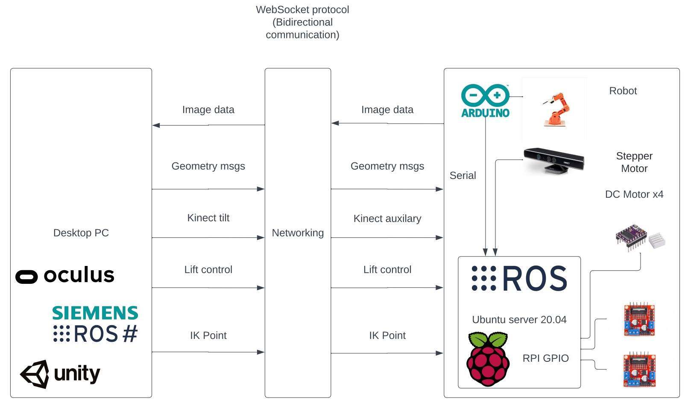
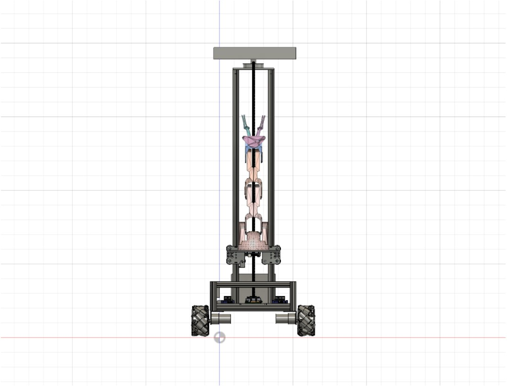
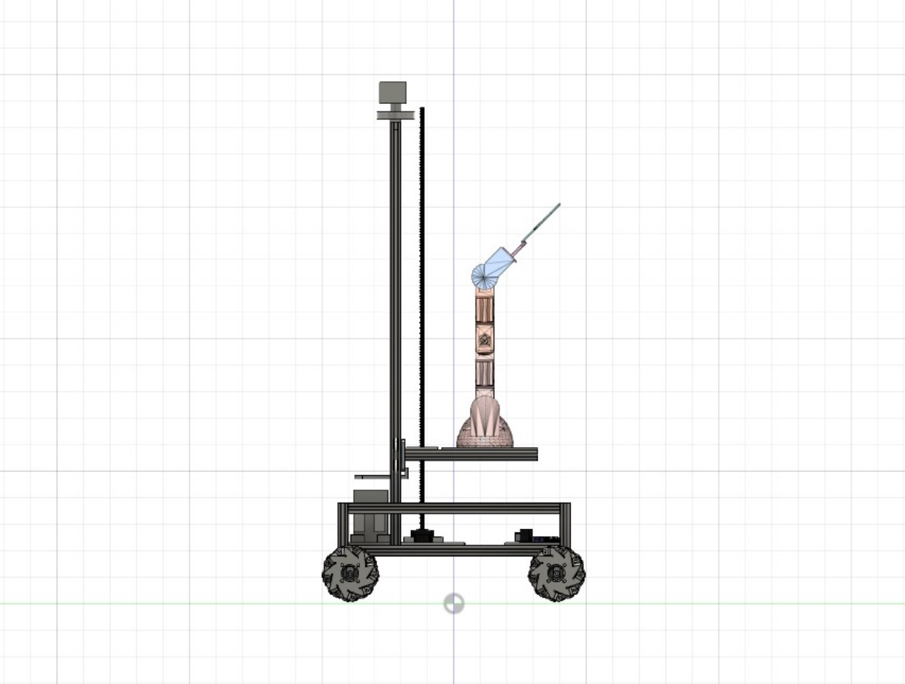

Robotic Teleoperation Using VR (V0.9)
This project aims to develop Mai, a VR-enabled, teleoperable mobile service robot built on the Robot Operating System (ROS). The system is designed to allow users to intuitively perform physical tasks remotely using a virtual reality interface, effectively acting as a real-time proxy for human presence and manipulation.
The software stack leverages ROS as the middleware for robot communication, coordination, and control. Core components are implemented using both Python and C++ to balance rapid development with high-performance execution. Python is used for high-level scripting, user interface integration, and prototyping, while C++ is employed for time-critical operations such as motion control, sensor processing, and real-time data handling.
The system runs on a Linux-based operating environment, providing a stable, flexible, and open-source platform for development and deployment. By integrating VR technologies with robotic mobility and manipulation, Mai enables users to bypass the constraints of physical travel, particularly for mundane or repetitive tasks, and operate in remote environments with ease and precision.
Body Panels
Mai now has new body panels that protect the internals from collision and damage. Each panel has been designed to use the V-slot extrusion profile for easy and secure mounting.
Edge Software Auto Launch (Pre-Alpha)
Before this update, each node / microservice within the ROS middleware had to be launched manually, now on boot Mai starts all these services allowing seamless operation once the VR client is connected.
Meta API Integrated For Use With New Oculus Hardware And Meta Headsets (Pre-Alpha)
As part of the new client software the Quest2 has been the main focus for the new configuration. V0.6 is fully compatible with the Rift and Rift S.
Change Log
Lift + has now been added as a mapping to the Quest 2 & 3.
The interface for viewing Mai's environment has been re-designed.
New Interface for the status of Mai's joint angles and positions (Debug).
Robotic Teleoperation Using VR (V0.6)

Mai has been developed using a Raspberry Pi 4 and an Arduino Uno microcontroller, with Python and C++ implemented within Linux (Distribution: Ubuntu server in headless operation) and the middleware ROS.
Mai has been made as an artifact for my computer science degree at the University of Portsmouth. The V0.6 development cycle is complete; see below for details including my final undergraduate dissertation report.
The high level system architecture is as follows. The diagram shows the ROS Topics (arrows) used for communication via the WebSocket protocol. GPIO and serial are used for communication within the robot control unit.

Hardware schematic and parts list
Front View

Rear View

3D View
Mai's development was a success: the final artefact is able to be remotely controlled using a VR interface, although this project was a success in generating a complete and working artefact, it is however limited in its function. Due to the low-grade hardware integrated the overall system is far from perfect; whilst the final prototype is usable, it's not the most refined and accurate. For example, the lack of an encoded-motor drivetrain, suspension or stable omnidirectional wheel mounting configuration causes drifting in movement and an overall noisy actuation. The arm is more stable as it's a pre-purchased unit although its low-torque plastic construction and maximum load are all limiting factors to its operation as intended.
The final artefact works very well as a proof of concept. This project will be rebooted in April 2023 for a new development cycle focused on improving the aspects discussed above. If you would like to get involved in the project please feel free to download the source code and add it to your ROS Noetic catkin workspace to get started. The report details all the dependencies required in chapter six.